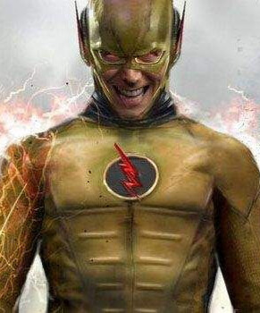

FLASH REVERSO / EOBARD THAWNE
O Professor Zoom é um personagem fictício de histórias em quadrinhos (HQs) da DC Comics, que possui identidade secreta de Eobard Thawne. Também conhecido como o segundo Flash Reverso (ou Anti-Flash), sendo o maior inimigo do Flash (Barry Allen).[1] Sua estreia aconteceu na revista Showcase 4, marcando o início da Era de Prata dos Quadrinhos, quando alguns personagens da DC foram reinventados novamente. Eobard Thawne era originalmente um criminoso do século 25, que encontrou uma cápsula do tempo contendo o uniforme do Flash. Este usou uma máquina para amplificar a força de aceleração contida na vestimenta, durante o processo o uniforme mudou de cor, com as partes vermelhas tornando-se amarelas e as amarelas tornando-se vermelhas. O Professor Zoom foi o maior inimigo de Barry Allen. Tão sanguinário quanto o Gorilla Grodd, tão sequelado quanto o Murmúrio e tão rápido quanto qualquer um dos Flash. Usou seus poderes para cometer crimes, mas foi parado pelo Flash, que avançara no tempo para presenciar a cápsula do tempo sendo aberta, pois ela continha um relógio nuclear com poder de explosão de uma bomba atômica. Após uma batalha destrutiva o vilão foi finalmente derrotado, assim Thawne tornou-se obcecado por Barry Allen. Descobriu a identidade secreta do Flash e matou sua esposa Íris. Professor Zoom foi morto ao tentar matar a noiva de Barry, Fiona, teve seu pescoço quebrado pelo Flash.